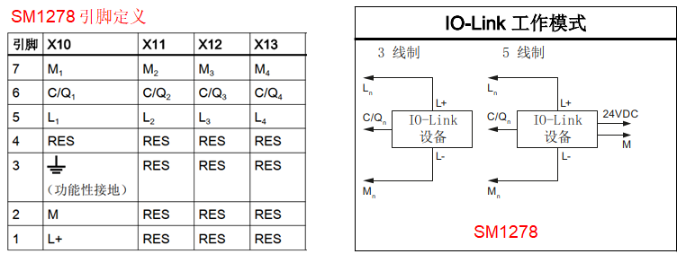
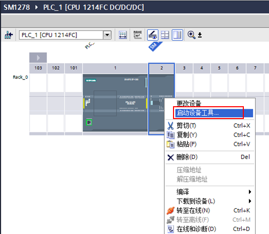
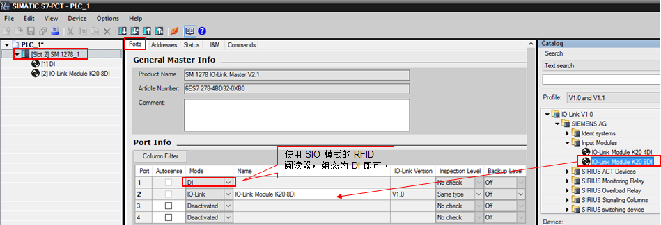
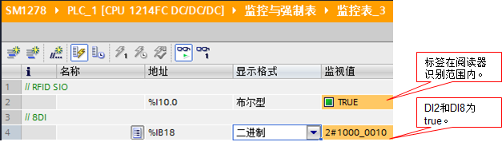
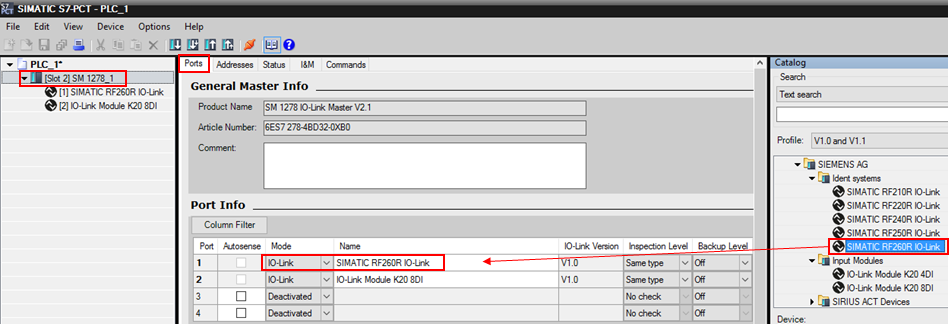
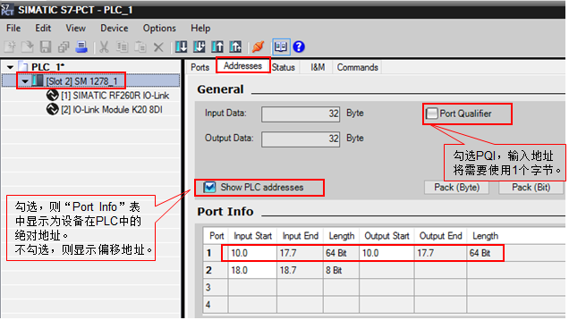
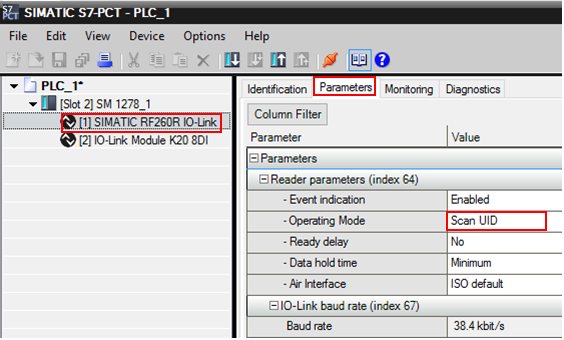
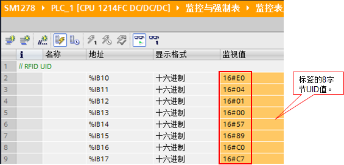
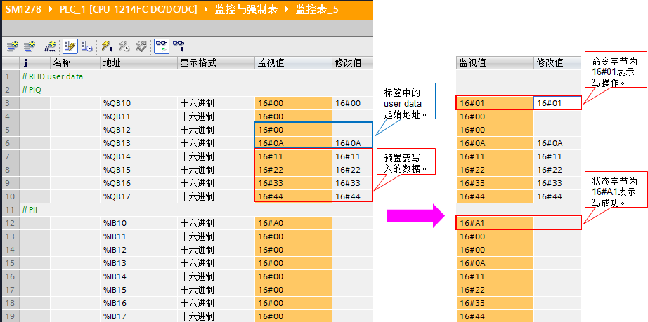
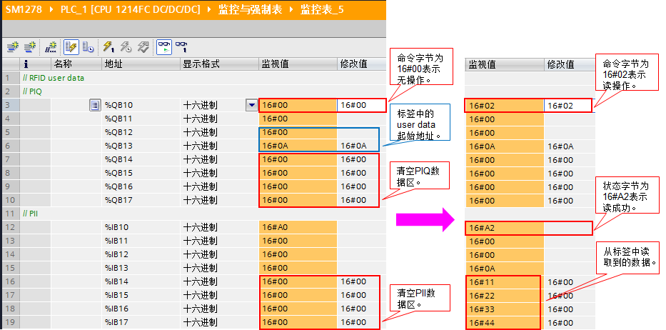

硬件：
① CPU 1214FC DC/DC/DC V4.4
② SM1278 V2.1（IO-Link 协议版本 V1.1）
③ 带 IO-Link 接口的 RF260R V1.0
④ IO-LINK MODULE K20， 8DI-M8
软件：
① 本文中使用 TIA Portal STEP7 V16
② 本文中使用 S7-PCT V3.5 SP1
硬件接线，请参考相关手册：
① SM1278 接线端子定义，参考下面链接中的手册，章节：A.12.1 SM 1278 4xIO-Link 主站
 按住 Shift 键时用鼠标点击下列链接，打开新浏览器窗口。
按住 Shift 键时用鼠标点击下列链接，打开新浏览器窗口。
https://support.industry.siemens.com/cs/cn/zh/view/109772940

图.01
② 带 IO-Link 接口的 RF260R 接线端子定义，参考下面链接中的手册，章节：9 连接电缆
 按住 Shift 键时用鼠标点击下列链接，打开新浏览器窗口。
按住 Shift 键时用鼠标点击下列链接，打开新浏览器窗口。
https://support.industry.siemens.com/cs/cn/zh/view/109747228

图.02
③ IO-LINK MODULE K20， 8DI-M8 接线端子定义，参考下面链接
 按住 Shift 键时用鼠标点击下列链接，打开新浏览器窗口。
按住 Shift 键时用鼠标点击下列链接，打开新浏览器窗口。
https://support.industry.siemens.com/cs/cn/zh/view/29683449 .

图.03
注意：下文中涉及 RFID 的三种工作模式，SIO 模式，UID 模式，User data 模式；
相关详细的使用说明，请参见如下手册中的章节：5.3 RF200 IO-Link 阅读器的模式
 按住 Shift 键时用鼠标点击下列链接，打开新浏览器窗口。
按住 Shift 键时用鼠标点击下列链接，打开新浏览器窗口。
https://support.industry.siemens.com/cs/cn/zh/view/109747228
打开 TIA Portal，组态 CPU 1214FC 和 SM1278 模块，取消勾选 “组态无需使用 S7-PCT”，如图 4 所示：

图.04
注意：对于新配置的 SM1278 模块，建议先将该未配置任何 IO-Link 设备的组态下载到 PLC 中，使得 CPU 能通过背板总线正确识别到 SM1278。
然后，在 SM1278 上鼠标右键，菜单选择“启动设备工具…”，如图 5 所示：

图.05
进入 S7-PCT 配置界面，对 RF260R 和 IO-LINK MODULE K20， 8DI-M8 进行配置，如图 6 所示：

图.06
端口 3 和端口 4 未连接设备，则“mode”设置为“Deactivated”。（注：如果使用 RFID 的 SIO 模式，须通过 S7-PCT 进行设置）。
点击“Addresses”菜单查看 IO-Link 设备的 IO 地址，如图 7 所示：

图.07
在 S7-PCT 中，点击按钮 ，下载成功后，退出 S7-PCT，打开监控表，如图 8 所示：

图.08
也可以通过 S7-PCT 读取 RFID 标签中的 UID值，对 RFID 阅读器进行组态方法，如图 9 所示：

图.09
点击“Addresses”菜单查看 IO-Link 设备的 IO 地址，如图 10 所示：

图.10
选择端口 1 的 RF260R，在属性"Parameters>Operating Mode"中选择“Scan UID”模式，设置如图 11 所示：

图.11
在 S7-PCT 中，点击按钮 ，下载成功后，退出 S7-PCT，打开监控表，如图 12 所示：

图.12
如需使用 RFID 的 User data 模式（该模式必须使用 S7-PCT 进行组态），在属性"Parameters>Operating Mode"中选择“Scan user data”模式，设置如图 13 所示：

图.13
在 S7-PCT 中，点击按钮  ，下载成功后，退出 S7-PCT，打开监控表。
本例中，对标签的用户数据区，偏移起始地址为16#0A，写入 4 个数据，如图 14 所示为写数据操作：
，下载成功后，退出 S7-PCT，打开监控表。
本例中，对标签的用户数据区，偏移起始地址为16#0A，写入 4 个数据，如图 14 所示为写数据操作：

图.14
对标签的用户数据区，偏移起始地址为16#0A，读取 4个数据，如图 15 所示为读数据操作：

图.15
对于 PIQ 和 PII 的定义和说明请查看本文前部提供的链接中下载的手册。
通过上述图 14 和图 15 的操作，可见：通过 PIQ 和 PII 操作 RFID 标签的用户数据区不太灵活，且每次操作的数据局限于 4 个字节。
对于有大量用户数据需要进行读和写操作的应用，建议使用使用西门子官方提供的指令库：
 按住 Shift 键时用鼠标点击下列链接，打开新浏览器窗口。
按住 Shift 键时用鼠标点击下列链接，打开新浏览器窗口。